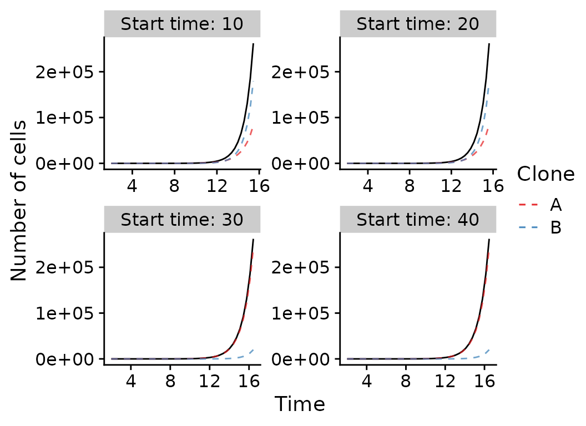

time_series.Rmd
library(TEMULATOR)
library(cowplot)
library(ggplot2)
library(dplyr)
#>
#> Attaching package: 'dplyr'
#> The following objects are masked from 'package:stats':
#>
#> filter, lag
#> The following objects are masked from 'package:base':
#>
#> intersect, setdiff, setequal, union
library(gganimate)
#> No renderer backend detected. gganimate will default to writing frames to separate files
#> Consider installing:
#> - the `gifski` package for gif output
#> - the `av` package for video output
#> and restarting the R session
theme_set(theme_cowplot())
# fixed parameters, a neutral tumour:
fixed_clone_params_neutral =
data.frame(
birthrate = 1,
mutationrate = 1,
start_time = 0,
father = 0
)
# varied parameters:
n_reactions = 1:1000
seeds = 1:5
deathrates = c(0, 0.1, 0.25, 0.45)
# create all simulations:
all_results_neutral = NULL
for (dr in deathrates) {
for (s in seeds) {
this_params = fixed_clone_params_neutral %>% mutate(deathrate=dr)
sim = new(TEMULATOR_object, this_params, 0, 100, s) # construct temulator object
for (n in n_reactions) {
sim$end_time = n # 1) update the end time
sim$run(FALSE) # 2) run forward, not verbose
result_this_simulation =
data.frame(
reactions=sim$n_reactions,
t=sim$simulation_time,
cells=sum(sim$cell_counts),
seed=s,
dr=dr
)
all_results_neutral =
rbind(
all_results_neutral,
result_this_simulation
)
}
}
}
all_results_neutral %>%
ggplot(aes(x=t, y=cells, group=seed)) +
geom_line(alpha=0.7, color="gray10") +
scale_color_brewer(palette="Set1") +
xlab("Time") +
ylab("Number of cells") +
guides(color=FALSE) +
facet_wrap(~paste0("Deathrate: ", dr), ncol=2, scales="free")
#> Warning: `guides(<scale> = FALSE)` is deprecated. Please use `guides(<scale> =
#> "none")` instead.
# fixed parameters, a non-neutral tumour:
fixed_clone_params_selection =
data.frame(
birthrate = c(1, 1.3),
mutationrate = c(1, 1),
father = c(0, 0),
deathrate = c(0,0)
)
# varied parameters:
n_reactions = unique(round(2^seq(from=0, to=18, by=0.5)))
seeds = 1
start_times = c(10, 20, 30, 40)
# create all simulations:
all_results_selection = NULL
for (st in start_times) {
for (s in seeds) {
this_params = fixed_clone_params_selection %>% mutate(start_time=c(0, st))
sim = new(TEMULATOR_object, this_params, 0, 100, s)
for (n in n_reactions) {
sim$end_time = n # 1) update the end time
sim$run(FALSE) # 2) run forward, not verbose
result_this_simulation =
data.frame(
reactions=sim$n_reactions,
t=sim$simulation_time,
cells=sum(sim$cell_counts),
clone1=sim$cell_counts[1],
clone2=sim$cell_counts[2],
seed=s,
start_time=st
)
all_results_selection =
rbind(
all_results_selection,
result_this_simulation
)
}
}
}
all_results_selection %>%
mutate(clone2=ifelse(is.na(clone2), 0, clone2)) %>%
ggplot(aes(x=t, y=cells, group=seed)) +
geom_line(alpha=1.0) +
geom_line(alpha=0.7, aes(color="A", y=clone1), linetype=2) +
geom_line(alpha=0.7, aes(color="B", y=clone2), linetype=2) +
scale_color_brewer(palette="Set1") +
xlab("Time") +
ylab("Number of cells") +
labs(color="Clone") +
facet_wrap(~paste0("Start time: ", start_time), ncol=2, scales="free")
# fixed parameters, a non-neutral tumour:
fixed_clone_params_sample =
data.frame(
birthrate = c(1, 1.3),
mutationrate = c(10, 10),
father = c(0, 0),
deathrate = c(0, 0),
start_time = c(0, 40)
)
seed = 1
# varied parameters:
n_reactions = unique(round(2^seq(from=0, to=25, by=0.5)))
# parameters for sequencing
min_vaf = 0.05 # 1% limit of detection
depth = 100 # 100x mean coverage
depth_model = 1 # poisson distribution
purity = 1.0 # a pure tumour
clone_f_selection_sweep = NULL
samples_selection_sweep = NULL
# create temulator object
sim = new(TEMULATOR_object, fixed_clone_params_sample, 0, 100, seed)
for (n in n_reactions) {
# update simulation
sim$end_time = n # 1) update the end time
sim$run(FALSE) # 2) run forward, not verbose
# cell count data
cell_counts_this =
data.frame(
reactions=sim$n_reactions,
time=sim$simulation_time,
cells=sum(sim$cell_counts),
clone1=sim$cell_counts[1],
clone2=sim$cell_counts[2],
seed=s,
start_time=st
) %>% mutate(clone2=ifelse(is.na(clone2), 0, clone2))
# sequencing data
sample_this = # (see ?simulateTumour for details)
sim$sample_seeded(min_vaf, purity, depth, depth_model, seed) %>%
mutate(vaf = alt/depth) %>%
mutate(n_reactions = n) %>%
mutate(time = sim$simulation_time)
# append data to result sets
clone_f_selection_sweep = rbind(clone_f_selection_sweep, cell_counts_this)
samples_selection_sweep = rbind(samples_selection_sweep, sample_this)
# break loop if full sweep of subclone observed?
if (cell_counts_this$clone2 / cell_counts_this$cells > 0.9) break()
}
plot_selection_sweep =
samples_selection_sweep %>%
mutate(mlabel=TEMULATOR:::assign_mutation_label(.)) %>%
ggplot(aes(x=vaf, fill=factor(mlabel))) +
geom_histogram(breaks=seq(from=min_vaf, 1, by = 0.01)) +
scale_fill_brewer(palette = "Set1") +
xlab("VAF") +
ylab("Number of mutations") +
labs(fill="Cluster") +
labs(title="Selective sweep") +
labs(subtitle = "t = {signif(frame_time, 2)}") +
xlim(-0.01, 1.0) +
transition_time(time)
plot_selection_sweep =
plot_selection_sweep +
# box marking limit of detection
geom_polygon(data=data.frame(x=c(0, 0, min_vaf, min_vaf), y=c(0, Inf, Inf, 0)),
aes(x=x,y=y), fill="gray90", inherit.aes = FALSE) +
# line showing expected VAF of subclone
geom_vline(data=clone_f_selection_sweep, aes(xintercept=clone2 / cells * 0.5),
linetype=2, color="gray20") +
# label of subclone line
geom_text(data=clone_f_selection_sweep, aes(x=clone2 / cells * 0.5 + 0.025),
label=factor("Exp. VAF subclone"),
hjust=0, vjust=0.5, y=25, color="gray20", inherit.aes = FALSE)
animate(plot_selection_sweep, width=380, height=220)